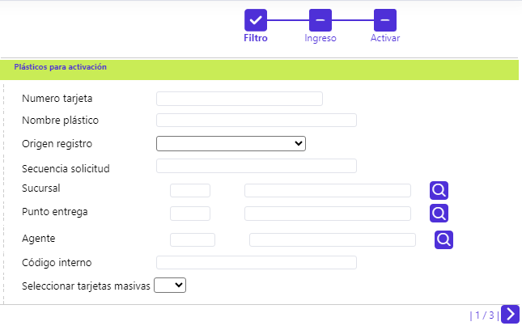
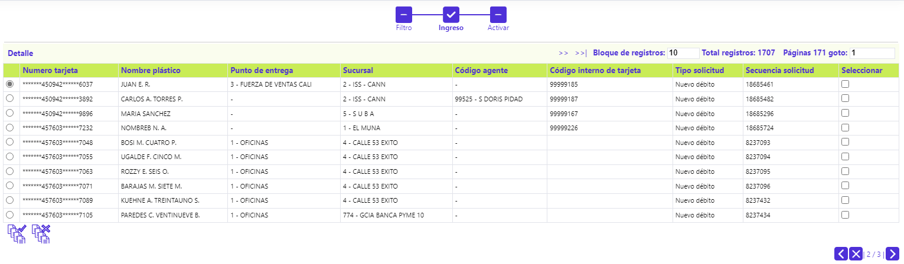
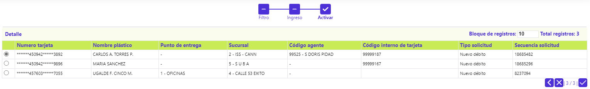
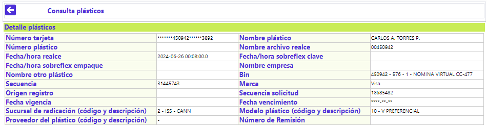

Plásticos para Activación
Mediante esta función, se habilita la selección de aquellos plásticos que, durante el proceso de las diferentes solicitudes, arriban a la etapa de Activación y que, como resultado de la labor efectuada por las empresas de mensajería, permite registrar el evento de si el plástico fue aceptado por el cliente o, si por el contrario este no pudo ser entregado o fue expresamente rechazado.
Al invocar la opción, el usuario se encuentra con un wizard de tres pasos, el primero, corresponde a un filtro, que permite ubicar la(s) tarjeta(s) que se desea consultar para generarles la marcación de Activa.

Descripción de campos
|
Número tarjeta |
Campo alfanumérico de hasta 23 posiciones en el que se puede ingresar el número de alguna tarjeta en particular que se desee consultar para realce. |
|
Nombre plástico |
En este campo se ingresa como criterio para la consulta el nombre del cliente tal y como debe ir realzado en el plástico. |
|
Origen registro plástico |
Campo que posee lista de valore tipo combo de la cual se puede seleccionar entre: Débito Masivo No Personalizado o Crédito Masivo No Personalizado, el evento que dió origen a la solicitud de los plásticos que se desea consultar para realce. |
|
Secuencia solicitud |
En este campo numérico se puede ingresar el número de la solicitud específica para la cual se desean consultar el plástico a realzar. |
|
Sucursal |
Campo con lista de valores que permite seleccionar la Sucursal en la que se gestionó la solicitud de las tarjetas para las cuales se desea activar. |
|
Punto entrega |
Campo con lista de valores que permite seleccionar el punto de entrega asociado con las tarjetas para las cuales se desea consultar y ejecutar el proceso de realce. |
|
Agente |
Campo con lista de valores que permite seleccionar el Agente asociado con las tarjetas para las cuales se desea consultar y activar. |
|
Código interno |
En este campo numérico se puede ingresar el número del código interno o único asociado a cada tarjeta, para la cual se desean consultar y activar. |
|
Seleccionar tarjetas masivas |
Campo que posee lista de valores tipo combo de la que puede seleccionarse entre: Si o No, se deben incluir del proceso de activación, a los plásticos de los procesos de generación masiva de tarjetas. |
Una vez seleccionados los criterios y al desplazarse a la segunda página del wizard, se muestran los registros que cumplen con las condiciones indicadas por el usuario, mostrando para cada uno de ellos: Número de tarjeta (enmascarado), Nombre a realzar en el plástico, Punto de entrega, Sucursal, Código agente, Código interno de tarjeta, Tipo de solicitud, Secuencia solicitud y, un campo para marcar aquellos registros que se quieran activar, en caso que el usuario no desee ejecutar la acción para todos los registros desplegados por los filtros.
Es de aclarar que, en el caso que las tarjetas desplegadas correspondan a tipo débito generadas masivamente, el campo Nombre plástico se mostrará en blanco.
Esta segunda página del wizard cuenta con dos botónes especiales que le permiten a la entidad Seleccionar o Deseleccionar todos los registros desplegados en el formulario y así facilitar avanzar al tercer paso del wizard.

En la tercera página del wizard, se muestran los registros que el usuario seleccionó, en caso que éste no se vaya a aplicar para todos los registros desplegado en la segunda página y mediante el botón de palomita o visto bueno se ordena la activación de las correspondientes tarjetas. El formulario cuenta con el enlace Detalle.

Detalle: Al activar ese enlace se despliega el siguiente formulario, en el que ninguno de sus campos es modificable:

Botones especiales
Seleccionar / Deseleccionar: Dupla de botones especiales que le permiten a la entidad, marcar o desmarcar, todos los registros desplegados en el segundo paso del wizard y así facilitar avanzar al tercer paso del mismo.